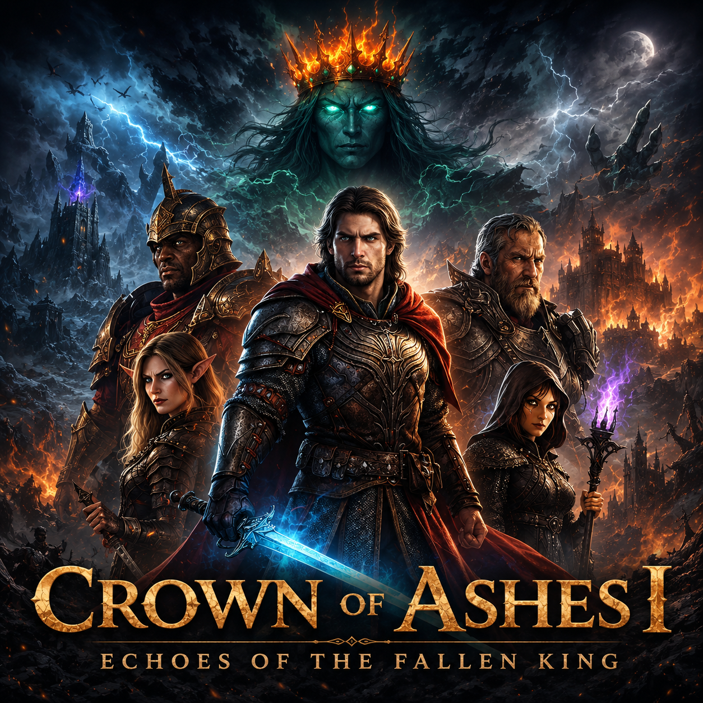

Crown of Ashes I
Пригодницька карта з сюжетом у світі Елдорії.
У розробці
Орієнтовний вихід: березень 2027
Повний опис
Гравець потрапляє у світ Елдорії під час епохи конфліктів між державами та зростання впливу темних сил.
Про світ
Елдорія — древній магічний світ Великого Колеса, населений людьми, драконородженими, нагами та багатьма іншими расами.

Project: Lost Kingdom
Дослідницька карта у стародавніх руїнах.
Планування
Орієнтовний вихід: невідомо
Повний опис
Мандрівка крізь занепалу цивілізацію.
Про світ
Події відбуваються на планеті Аурелія.
Майбутні проєкти
- Нова сюжетна карта у всесвіті Елдорії.
- Глобальний RPG-мод для Minecraft Bedrock.
- Інтерактивна енциклопедія мультивсесвіту.
- Серія карт про Організацію Часового Порядку.